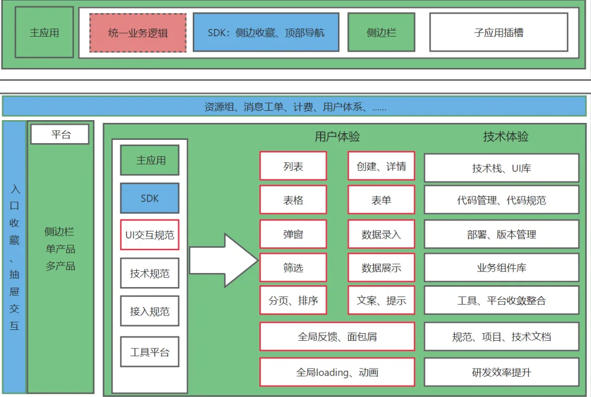
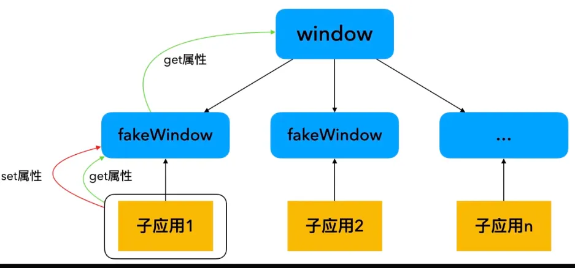

业务线大多老旧项目在开发体验以及用户体验上都有很多瓶颈，加之项目需要聚合后由内转外等需求，决定使用微前端方案对各项目进行改造。
简单介绍下微前端
微前端是一种多个团队通过独立发布功能的方式来共同构建现代化 web 应用的技术手段及方法策略。“类似 Iframe，却没有它的各种问题。”微前端最核心的价值或者特性，就是技术栈无关。通常我们在构建 web 应用时，会有同一框架、同一大版本的限制。微前端的这个特性就打破了传统 web 的限制。我们利用这个特性，做到 应用拆分聚合、增量升级。再结合实际的场景，来解决问题。
比如，应用拆分可以做到模块化开发、降低项目复杂性、提升部署效率和不同团队之间项目耦合性的问题。
应用聚合，能够解决用户体验，产品一致性等产品层面的问题，以及优化业务流程和定制化交付。
渐进式升级，相比较于全量升级的优点是，降低风险成本，适应性和灵活性也高，可以持续的灵活的把控重构进度，不影响现有业务。
你并不一定需要微前端
在决定使用微前端之前，首先要明白的是，微前端不是银弹，微前端是和业务耦合性比较高的技术方案。微前端在解决实际场景下问题的同时，也带来了更高的复杂性。
通常需要微前端方案解决的项目一般是“巨石应用”类，这类项目经过长期迭代维护，加之近些年前端技术的快速更新迭代，其的特点就是 业务逻辑复杂、庞大且技术栈老旧、兼容性差等。
在遇到问题，考虑使用微前端方案解决的同时，也要思考项目业务逻辑和技术复杂性的问题，考虑投入产出比。
为什么使用微前端
前端项目由各个部门前端团队各自开发维护，没有任何限制，主要有以下特点：
- 各项目启动时间跨度较长，技术栈繁杂
- 各团队独立维护项目，在规范、流程等方面存在差异
- 多数项目为对内，在用户体验、交互等有一定缺陷
- 项目多为中后台、云控制台类，前端场景具有一致性
- 项目涉及复杂表单类场景较多，业务逻辑复杂
- ……
产品体验
- UI 交互体验：内部项目本身会偏功能性，加上部分项目迭代周期过长，用户体验存在较多问题。
- 产品体验：业务线的功能产品融合从效率和成本方面考虑，大多基于现有项目改造，产品整体一致性不完善。
- 内外用户：内部用户对内部项目会有一定的容忍度，后续对外后整个用户体验会不太友好。
技术维度
由于历史背景和包袱，加上中后台系统的生命周期较长、技术栈老旧繁杂，导致很多问题，且随着产品的持续迭代，问题会越发严重。其主要特性和问题包括但不限于以下点：
- 巨石应用代码量高
- 规范流程不统一
- 工程侧提效受限
- 维护代码量和代码重复率高
- 开发人员交接维护成本高、分配灵活度受限
- 研发效率及交付质量持续打折
- 开发心智负担增加
- 项目本身稳定性及可维护性持续变差
- ……
从业务本身的特性、现阶段各产品项目形态、未来发展方向出发考虑，结合技术层面分析。现在遇到的问题，在未来会持续演化加重，造成的不利影响是全方面的。结合几点来说，使用微前端可以比较好的解决上述痛点。
整体流程
这里贴一张图，大家可以参考：
微前端方案在业界比较成熟了，不同业务线，项目，场景可以结合使用不同的微前端框架和方案。过程都相差不大，分为几步：
基座落地
- 业界类似应用云控制台、中后台场景基本都有上述通用的痛点和解决方案，技术方案比较成熟，不在一一赘述，需要注意的是结合业务场景和项目灵活应用。
项目接入
- 包含登录、组织架构、权限逻辑、统一 UI 等。统一的逻辑可抽取出来，兼容主子应用
- 无侵入接入，各项目可保持其独立的逻辑
项目升级
- 对需要技术体验升级的项目，根据具体的业务逻辑拆分新项目，二八原则选择性升级，所有新建项目使用统一技术栈
- 新开发项目如需独立开发部署，可使用统一的 sdk 简化通用逻辑，也可由主应用控制
快速开发
- 同类型业务线项目、中后台系统、线上交互功能确定、样式逻辑较为统一。表单页、列表页、操作组件、业务组件等，可进行大量的物料开发复用
- 基于模板化配置，结合 cli 和 vscode plugin 提供大量可复用物料，提升研发效率
- 其他提升研发效率的方案，如：结合 AI
通用业务逻辑集成
集成统一登录、业务组织体系、消息工单、权限等通用逻辑。
- 组织体系、资源组、消息工单等，已经在各系统之间打通，可复用现有 sdk。
- 各系统登录体系相同，每个项目内各自实现登录状态逻辑判断。后续由基座统一实现登录逻辑，分发给各子应用登录状态和信息。保留兼容子应用特殊逻辑的处理能力，确保子应用的登录状态完善。
- 各系统权限控制，由其对应的管理系统单独控制，暂保留其本身控制能力，后续逐步收敛统一。主应用提供子应用级别的权限控制。
路由导航控制
基座维护一份针对各子应用的路由表，可依据页面功能划分，对菜单项进行控制以及实现页面上的产品拆分聚合。具体路由划分由原系统域名和业务模块进行配置对应，如：
- aaa.xxx.xx 为主站域名
- 原 kkk 系统，由 kkk.xxx.xx => aaa.xxx.xx/kkk
- 原 hhh 系统，由 hhh.xxx.xx => aaa.xxx.xx/db
- 原 qqq 系统，qqq.xxx.xx => aaa.xxx.xx/qqq
- ……
基座除了维护子应用级的路由，还需要管理子应用下的一级路由，确保子应用内各功能的入口。
前期阶段基座只维护子应用及子应用内的一级路由，后期将各子应用的路由、权限平台化，由基座应用根据权限控制子应用及其功能。通过配置化、请求拦截，做到页面级、按钮级路由权限控制统一。
主题样式控制
将适配业务主题的样式变量整理统一，抽离出样式配置表，通过基座下发给子应用。
- 针对现有老项目，可逐步根据下发的配置表替换原有主题变量。
- 新项目，通过 antd 等主题配置抽离，子应用无需改动，直接复用。
通过基座维护的统一配置，可以做到全系统主题快速切换。
组件类库共享
各项目在工程体系、技术栈、版本、分包策略等方面各不相同。如果对现有项目进行整合复用资源，面临差异过大、调试成本等困难。
基座落地阶段需要考虑到后续技术栈统一，主子应用之间资源共享的问题。基于后续规划，基座考虑实现如下几点确保资源最大化共享：
- 主应用统一导入公共依赖、类库、第三方包，子应用公共依赖通过 external 的方式配置。
- 组件方面，考虑到业务的特性、通用性以及后续前端技术栈的情况，将组件划分为业务组件、通用组件、区块、公用类库等。
应用集成通信
现有各应用之间，除资源组、用户等必要信息外，各应用、功能之间没有过强的状态依赖。得益于业务的这些特性，以及现有的项目实现流程，使得应用之间的通信需求比较简单。另外，从应用设计层面来说，各应用之前不应过多耦合其它应用的业务逻辑，部分状态的共享也可从后端获取。各框架都提供了较为完善的通信方案。
应用隔离
确保 js 和 css 的隔离方案，能够兼容主子应用以及新老应用。
主子应用优化
除通过预加载的形式，可结合缓存、按需加载、依赖提取等方式提升子应用加载速度。对于一些高频子应用，还可通过手动挂载应用，样式隐藏的方式提升用户体验。
无侵入集成开发
子应用依赖基座的开发，通常需要启动基座和子应用两个服务，大多数情况下只需要开发对应子应用的功能。
开发方式有如下几种：
- 主应用在线上，线上主应用通过配置加载运行本地子应用，需要测试机器运行主应用，且维护较为麻烦
- 主子应用均在本地开发，需要拉取启动两个项目
- 将基座进行包装集成，兼容子应用的开发，提供基座版本更新的能力
建议第三种方案，提供一个脚手架工具，简化工程师开发流程。同时集成项目所需模板、技术、规范、mock 等能力。
稳定性保障
- 开发规范：项目的稳定性取决于长期开发过程中对规范的实施程度，除文档等方式外，提供结合 lint 编码规范，项目规范，公共组件、函数工具等规范实践。以脚手架，插件等工具方式集成，在本地开发及 CI 阶段进行强校验，保证项目的可持续维护性。
- 监控方案：完成对子应用静态资源、配置等维度的监控。实时获取子应用的加载成功率，白屏时间等问题。
- 部署方案：在确保子应用能独立部署运行的基础上，增加快速回滚的能力
技术和其他细节思考
微前端在解决问题的同时也会带来一些不可知的问题和更高的复杂性。选择合适的微前端方案，能减少踩坑的次数。
现在业界内微前端方案还是比较多的，结合实际情况选择合适的微前端方案，可以帮助我们在实践落地的过程中事半功倍。
原生技术
如果原生技术能满足，越简单越好
原生技术方案实现如：iframe、nginx 代理等，成本较低、接入简单，但都具有片面性，比如：
- URL 不同步
- UI 不同步
- 通信麻烦
- 进入子应用需要重新加载资源，构建上下文
框架
微前端框架基本上要满足，技术栈无关、应用加载、路由同步、通信、隔离、预加载等能力。
下面基于三个业界比较成熟完善、具有代表性的框架 qiankun，wujie、micro-app 简单分析一下，在选择微前端方案时需要关注的技术点。
css 隔离-单实例
原理：每次子应用加载时，删除上一个子应的 link、style 样式，只保留当前子应用的样式，能有效区分子应用和子应用之前的样式冲突。
- 不支持主子应用的样式隔离
- 不支持多实例模式
css 隔离-Scoped CSS
原理：改写子应用所添加的样式为所有样式规则增加一个特殊的选择器规则来限定其影响范围，达到样式隔离的目的，类似 vue 的 scope-css。
.app-main {
font-size: 14px;
}
div[data-qiankun-react16] .app-main {
font-size: 14px;
}
由于需要在运行时替换子应用中所有的样式规则，性能会受一定影响
css 隔离-Shadow DOM
原理：为每个微应用的容器包裹上一个 shadow dom 节点，从而确保微应用的样式不会对全局造成影响。
影响 React 17 之前的版本，导致在 react 中事件无响应
解决：在 React 17 版本之前，所有用户事件都需要冒泡到 document 上，由 React 做统一分发与处理，如果冒泡的过程中碰到 shadowRoot 节点，就会将事件拦截在 shadowRoot 范围内，此时 event.target 强制指向 shadowRoot，导致在 react 中事件无响应。React 17 之后事件监听位置由 document 改为了挂载 App 组件的 root 节点，就不存在此问题了。
部分 UI 框架，如 antd 弹窗样式丢失
解决：主流 UI 框架比如 antd 为了避免上层元素的样式影响，通常会把弹框相关的 DOM 通过 document.body.appendChild 插入到顶层 body 的下边。此时子应用中 antd 的样式规则，由于开启了 shadowDom ，只对其下层的元素产生影响，自然就对全局 body 下的弹框不起作用了，造成了样式丢失的问题。可以改写 modal 挂载节点解决。
基于 web Components 实现，存在兼容性问题
css 隔离-规范性限制
- 前缀命名空间
- BEM 规范
- CSS Modules
- css-in-js
依赖于规范，隔离效果不好。可以和微前端框架隔离方案，结合使用。比如：
单实例模式下，给主应用增加前缀命名空间，用来隔离主子应用的样式。
js 隔离-iframe
iframe 完美支持 js 隔离。比如，wujie 利用 iframe 的特性隔离 js，且解决了 iframe 的其他问题。
js 隔离-快照沙箱
在子应用加载和卸载时，对全局对象（如 window 对象）进行快照保存和恢复，从而确保各子应用之间的全局状态互不干扰
保存全局状态：在子应用加载之前，快照沙箱会对当前全局对象的状态进行保存。遍历全局对象（如 window）上的所有属性，并将它们的值存储在一个快照对象中。对每个属性的值进行深拷贝，确保保存的是属性的当前值，而不是引用。
恢复全局状态：在子应用卸载之后，快照沙箱会恢复之前保存的全局状态。
清空当前全局对象上的所有属性，避免旧的子应用状态影响新的子应用。将快照对象中的属性值恢复到全局对象上，确保全局状态回到子应用加载前的状态。
- 兼容性较好
- 快照沙箱的实现相对简单，适用于不频繁切换的子应用
- 对于包含大量全局变量的应用，快照和恢复操作的性能开销较大
- 直接操作的是全局唯一的 window，不支持多实例
js 隔离-代理沙箱
把当前 window 的一些原生属性（如 document, location 等）拷贝出来，单独放在一个对象上，这个对象也称为 fakeWindow，对每个微应用分配一个 fakeWindow，实现隔离。
当微应用修改全局变量时：如果是原生属性，则修改全局的 window。如果不是原生属性，则修改 fakeWindow 里的内容。
微应用获取全局变量时：如果是原生属性，则从 window 里获取。如果不是原生属性，则优先从 fakeWindow 里获取。
- 使用 ES6 的 proxy，存在兼容问题。
- 涉及到大量 dom 操作时，存在一些问题。
应用通信
如果是简单传值，使用 props 方式就行。如果主子应用之间需要频繁交互，各微前端框架都有比较完善的通信机制。基本上都能满足，结合实际项目选择合适的即可。
- props
- 发布订阅模式
- EventBus
- ……
多实例
支持多个子应用同时加载。
在实际的选择过程中，需要考虑是否支持多实例模式。
预加载&应用保活
预加载和应用保活可以有效提升用户体验和页面性能，如果对这方面有要求，在选择的时候可以着重考虑。
预加载：空闲时加载资源，可以极大的提升子应用打开的首屏时间
应用保活：子应用只会进行一次渲染，数据和路由的状态不会随着页面切换而丢失
子应用接入成本
根据接入子应用的数量、技术栈等方面考虑子应用接入成本。如果子应用的数量很多，需要根据每个子应用在技术侧和业务侧需要做的改动量进行权衡。
技术：
- 本地环境&线上环境 资源跨域代理配置
- 框架生命周期导出、构建配置调整
- 兼容独立运行环境
- 其它……
业务：
- 登录、权限等统一业务逻辑
- Layout 布局兼容改造
- …………
框架稳定性&社区活跃度
虽然现阶段微前端方案较为成熟，但是子应用在框架、UI 库、编译、版本存在的差异更大，无法 100%确定在接入之后会遇到什么问题。所以在技术选型的时候，要重视框架的稳定性和社区活跃度。
兼容性&性能
微前端框架的底层实现技术差异。
兼容性：
- 浏览器兼容性
- 微前端框架与子应用技术栈的兼容性
- 各技术栈、框架版本之间的兼容性
性能：
- 各个框架性能差异不大，基本能满足需求
兼容性：web componts 和 proxy 实现的隔离方案 浏览器支持不太好。技术栈之间的兼容性，qiankun 对 vite 的支持不太好，因沙箱是 eval 执行 性能有点问题。还有一些版本上的差异 也会存在一定的兼容性问题 （angular antd 和 zone.js）
性能方面：各个框架性能差异不大，基本能满足需求。（需要关注的是内存泄漏问题，在实际开发中，要确保子应用切换后被卸载）。
部署
考虑已有项目的部署方式结合前端路由，静态资源、api 等方面来决定是否对子应用的部署方式进行改造。
如果是应用聚合子应用较多，各子应用都有自己的部署方案，建议使用主应用，对子应用的路由、资源和 api 进行代理，尽量减少减少子应用改动，同时也要考虑子应用是否需要独立运行。
如果是项目重构或者拆分，子应用不多的情况下，可以在原有的部署方式进行调整，放在同一 ip 不同目录下部署。
主子应用职责划分思考
简单的说，就是什么功能放在主应用，什么放在子应用。
主应用：微前端肯定是需要一个主应用的，那么是新起一个项目作为主应用，还是在原有项目上改造主应用？
技术侧：如果本地环境下子应用资源加载出现了问题，是在主应用增加 devserver 的代理，还是更改子应用的 publicpath？
业务侧：建议所有的统一逻辑，登录、权限，layout 布局等集成在主应用内。子应用只关注业务逻辑。但在实际的业务场景下，可能因为业务逻辑的复杂性，跨部门沟通、子应用数量问题，后端实现逻辑复杂等原因造成业务改造的成本比较大。这时候在不影响体验的情况下，部分逻辑也是可以放在子应用内独自实现。
快速试错
在选择技术方案的时候，肯定是没有完美的方案。遇到问题的时候，首先是要把问题进行分类，首先是框架和接入项目之间的问题，比如 wujie 影响富文本编辑器，single-spa 与 angular 的冲突等，如果遇到类似的问题，可以进行快速的试错，实践，尝试其他的方案。
另外就是实现层面的问题，这种问题是可以确定能解决的，优先级可以放低。比如，基于 shodw dom 的隔离方案会影响 modal 的挂载样式，这时候只需要换一种隔离方案或者统一调整 modal 的挂载节点。
应用颗粒度
合理的子应用颗粒度划分，可以更好的管理项目。
应用聚合：其颗粒度本身就已经确定了就是每个接入的项目。具体每个项目还用不用拆分，可以具体分析。
应用拆分：颗粒度通常建议是按业务功能、团队维护范围进行拆分。
项目重构：最低只需要两个应用就行了，一个是新的技术栈，一个是老的技术栈。将功能从老的技术栈逐步迁移到新的技术栈即可。当然也可以划分更细的颗粒度。
其他
- 通常微前端方案的推进，不会单独进行，尽量实时同步主分支功能，不影响当前业务功能。
- 尽量保证子应用的独立运行，对业务进行兜底。
- 代码管理，需要根据具体情况分析使用的策略，比如单仓库，多仓库，权限分配等。
总结
上述便是在结合业务场景使用微前端方案的一些思考。希望能对大家有所帮助。